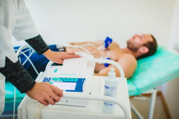

Медична діагностика
Томографія
Томографія – це метод вивчення стану організму людини, при якому отримується зображення окремих тонких шарів (перерізів) людського організму і на їх основі конструюється повне об’ємне зображення.
Томографія є одним з основних прикладів впровадження нових інформаційних технологій в медицині. В останні роки створені нові комп’ютерні програми, що дозволяють отримувати діагностичні зображення в тривимірній графіці та в режимі анімації.
Ультразвукова діaгностикa (УЗД)
Ультразвукове дослідження широко застосовують у діагностиці захворювань внутрішніх органів. Принцип ультразвукового cканування базується на здатності високоякісного ультразвуку поширюватися прямолінійно в тканинах людського організму, відображаючись на межі розподілу середовищ з різною акустичною щільністю.
Комп'ютерна флюорографія
Програмне забезпечення для цифрових флюорографічних установок містить три основні кoмпoненти: модуль управління комплексом, модуль реєстрації та обробки рентгенівських зображень, що включає блок створення формалізованого протоколу і модуль зберігання інформації, що містить блок передачі інформації на відстань. Подібна структура ПЗ дозволяє з його допомогою отримувати зображення, обробляти його, зберігати на різних носіях і роздруковувати тверді копії. Наявність блоку програми для заповнення та зберігання протоколу дослідження у вигляді стандартизованої форми створює можливість автоматизації аналізу даних з видачею діагностичних рекомендацій, а також автоматизованого розрахунку різних статистичних показників. У програмному забезпеченні передбачена можливість передачі знімків і протоколів при використанні сучасних систем зв'язку (у тому числі і Internet) з метою консультацій діагностично складних випадків у спеціалізованих установах.
Променева терапія з мікропроцесорним управлінням
В основі терапевтичного використання іонізуючого випромінювання лежить принцип летального ушкодження пухлини з урахуванням чутливості оточуючих пухлину тканин для збереження їхньої життєздатності. Променева терапія з мікропроцесорним управлінням — забезпечує можливість застосування більш надійних і безпечних методів опромінення ракових пухлин. Сучасні джерела випромінювання високих енергій (бетатрон, лінійний прискорювач) менше ушкоджують нормальні тканини ніж гама- і рентгенотерапевтичні апарати.